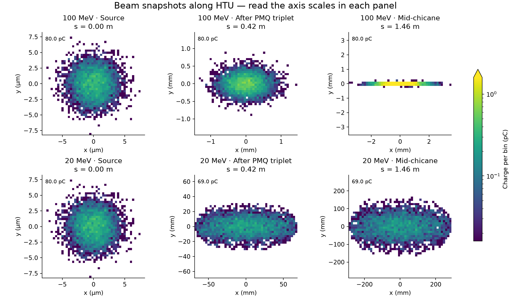

LLNL HPC Innovation Center 2026: WarpX/ImpactX Tutorial
Last updated on 2026-09-19 | Edit this page
Estimated time: 0 minutes
Overview
Questions
- What happens when two groups of electrons move through each other?
- How can a laser create a wave that accelerates electrons?
- Why do the same magnets affect beams of different energies differently?
- How could we pass a beam from one simulation to another?
Objectives
- Set up the software environment shared by all three exercises.
- Run a small one-dimensional (1D) simulation and plot how the electrons move.
- Run a small three-dimensional (3D) plasma simulation and plot electron density, electric fields and the distribution of electron energies.
- Use ImpactX to follow two example electron beams through accelerator magnets.
- Recognize when particles are lost and when a simulation stops giving valid results.
- Describe the extra steps needed to pass a beam from WarpX to ImpactX.
Overview
This tutorial starts with a small warm-up, followed by two independent visual examples: a plasma wake in WarpX and beam transport in ImpactX. An optional section explains how the two codes can be coupled for a more detailed study.
We will use two simulation tools. WarpX models charged particles and the electric and magnetic fields that act on them. Its particle-in-cell (PIC) method represents many real particles with each simulated particle and computes fields on a grid. ImpactX follows a beam through a sequence of accelerator components, such as magnets.
-
Two streams of electrons
(
two_stream_instability). Start with a quick 1D run: two groups of electrons move in opposite directions and develop a wave. This also checks that your simulation and plotting tools work. The standalone Two-Stream Instability episode lets you explore the parameters in more detail. -
A laser-driven plasma wake
(
htu/lwfa_warpx). Watch a short laser pulse push electrons aside and leave a wave behind it. Plot where the electrons are, the electric field and their energies. -
An electron beam passing through magnets
(
htu/beamline_impactx). Compare two computer-generated beams with energies of 100 MeV and 20 MeV. MeV means million electronvolts, a unit of particle energy. The magnets come from a model of the Hundred Terawatt Undulator (HTU) experiment. Watch the beam shapes change and see which particles reach the end.
The wakefield and magnet examples run independently; neither needs output from the other. Coupling them is an optional extension.
WarpX reads the settings from a plain-text input file using a short Python script. ImpactX uses a Python script to define the sequence of magnets, called a lattice, following the ImpactX HTU beamline example. You can run both examples from the supplied notebooks without writing code.
Use the WarpX notebook and the ImpactX notebook independently. Each focuses on running one example and visualizing its result. Optional coupling is explained at the end of this lesson.
Access and installation 💻
Registered participants: open the AWS link from Slack
Registered participants will receive a link in Slack that opens the AWS-hosted tutorial session directly in their browser. Open that link to start JupyterLab; you do not need to install software on your own computer. If you registered but cannot find your link, ask the organizers in Slack.
- Open your session link from Slack.
- In JupyterLab’s file browser, navigate to
warpx-tutorials/episodes/files/llnl-hpc-2026/. - Start with
two_stream_instability/two_stream_instability_plots.ipynbafter running the warm-up below, or openhtu/wakefield.ipynbandhtu/htu_transport.ipynbfor the two main examples. - Select WarpX GPU for the wakefield notebook and
WarpX CPU for the ImpactX notebook using Kernel
> Change Kernel. In the hosted wakefield notebook, leave
warpx_executable = Noneto use its GPU Python kernel.
The tutorial files and software are provided on the instance. No download is needed there. If you do not have a session link, or want to work later on your own machine, keep reading for Docker and Conda instructions.
Files for your own machine
With Git installed, open a terminal and run these commands to download the tutorial folder without the other lessons’ contents:
BASH
git clone --depth 1 --filter=blob:none --sparse \
https://github.com/BLAST-WarpX/warpx-tutorials.git
cd warpx-tutorials
git sparse-checkout set episodes/files/llnl-hpc-2026
cd episodes/files/llnl-hpc-2026This is called sparse checkout. It keeps the
tutorial’s directory structure and includes files in its parent
directories. You do not need a packaging script. The folder contains the
notebooks, input files, plotting helpers and optional converter. Open
htu/wakefield.ipynb or
htu/htu_transport.ipynb. Simulation output files are
created when you run the examples.
These commands download the files; use one of the installation options below to get the software. AWS and Docker users already have the tutorial files.
Alternative A: run the tutorial Docker image yourself
The image contains WarpX, ImpactX and the Python analysis tools, served as a browser-based JupyterLab session. To run it locally:
BASH
docker pull ghcr.io/blast-warpx/warpx-tutorials/tutorial:latest
docker run --rm -p 127.0.0.1:3000:3000 ghcr.io/blast-warpx/warpx-tutorials/tutorial:latestOpen http://localhost:3000/lab, launch a
Terminal, and go to:
For a local NVIDIA GPU with the NVIDIA Container Toolkit installed,
add --gpus all to the docker run command.
Select the notebook kernels as above. In a terminal, switch to the GPU
environment with:
The files are included in the image. See the tutorial container README for GPU access and other image details.
Use this if you want to run the tutorial on your own machine outside of the Docker image – e.g. a laptop with no Docker available, or a cluster where you’d rather use your own Conda installation.
We assume you have a Conda installation available on your machine. Download the Conda environment file, open a terminal in the directory containing it, and create the environment:
Activate it with:
The environment installs WarpX and ImpactX from Conda Forge, together with the Python packages used by the simulations and the analysis notebook. This tutorial has been tested with WarpX 26.09 and ImpactX 26.09. GPU execution requires a CUDA-enabled WarpX build; installing this environment alone does not establish GPU support. The warm-up and ImpactX example also run on CPU.
OUTPUT
name: llnlhpc26-warpx-tutorial
channels:
- conda-forge
dependencies:
- python=3.14
- warpx=26.09
- impactx=26.09
- openmpi
- numpy
- scipy
- pandas
- matplotlib
- jupyterlab
- openpmd-viewerWhen you have finished working, deactivate the environment:
To remove it completely at a later date, run:
Tutorial 1: two-stream instability warm-up
What we will simulate
Two groups of electrons move through each other in opposite directions at one tenth of the speed of light (\(\pm 0.1c\), where \(c\) is the speed of light). We follow motion along one direction, \(z\). The simulation box is periodic: an electron leaving one end re-enters at the other.
Small variations in electron density create an electric field. That field changes the electron motion, which can make the density variations grow. This feedback is the two-stream instability. As the wave grows, it can trap electrons, making them oscillate within the wave. Eventually the rapid growth levels off, or saturates.
All settings are supplied. This small run lets you practice running a simulation and reading its plots before trying the 3D example. For a closer look at the physics and how to choose the settings, see the standalone Two-Stream Instability episode.
Download the files
If you are running from the tutorial Docker image, this is already
present at
~/warpx-tutorials/episodes/files/llnl-hpc-2026/two_stream_instability/
– cd there and skip to Read
the input file.
Otherwise, create a two_stream_instability directory and
place the following files in it:
Read the input file
The Python script below loads the settings and starts WarpX:
OUTPUT
#!/usr/bin/env python3
"""Run the 1D two-stream instability warm-up from a raw WarpX input file."""
from pywarpx import warpx
warpx.load_inputs_file("two_stream_instability_input.txt")
warpx.step()
warpx.finalize()OUTPUT
# Two-stream instability warm-up: a 1D electrostatic PIC problem, used here
# as a quick, cheap first run before the heavier LWFA and beamline stages of
# this tutorial. Two cold-ish electron populations drift through each other
# at +/-beta0*c; the counter-streaming free energy grows an electrostatic
# wave until the beams trap each other and saturate.
#
# All parameters below are fixed (unlike the companion "A Two-stream
# Instability" episode, where you choose them yourself) so this runs in a
# few seconds and gets everyone to a working WarpX + Python + Jupyter
# pipeline before the LWFA stage.
####################
### MY CONSTANTS ###
####################
# PLASMA
my_constants.n0 = 1.e17 # electron density of each beam [m^-3]
my_constants.T0 = 5.*q_e # thermal energy of each beam [J], from 5 eV
my_constants.v_te = sqrt(T0 / m_e)
my_constants.beta0 = 0.1 # drift velocity of each beam, in units of c
my_constants.omega_pe = sqrt(n0*q_e**2/(m_e*epsilon0))
# BOX: sized to fit ~16 wavelengths of the fastest-growing mode,
# lambda ~ 2*pi*beta0*(c/omega_pe)
my_constants.Lx = 10.*clight/omega_pe
my_constants.nx = 256
my_constants.dx = Lx/nx
# TIME: long enough for the instability to grow and saturate
my_constants.cfl = 0.9
my_constants.T = 100./omega_pe
my_constants.dt = cfl * dx / clight
my_constants.nt = floor(T/dt)
##########################
### GENERAL PARAMETERS ###
##########################
stop_time = T
amr.n_cell = nx nx nx
amr.max_level = 0
geometry.dims = 1
geometry.prob_lo = -0.5*Lx -0.5*Lx -0.5*Lx
geometry.prob_hi = 0.5*Lx 0.5*Lx 0.5*Lx
##########################
### BOUNDARY CONDITION ###
##########################
boundary.field_lo = periodic periodic periodic
boundary.field_hi = periodic periodic periodic
boundary.particle_lo = periodic periodic periodic
boundary.particle_hi = periodic periodic periodic
################
### NUMERICS ###
################
warpx.cfl = cfl
algo.maxwell_solver = yee
algo.particle_shape = 3
algo.particle_pusher = boris
warpx.use_filter = 1
#################
### PARTICLES ###
#################
particles.species_names = ele1 ele2
ele1.species_type = electron
ele1.injection_style = NRandomPerCell
ele1.num_particles_per_cell = 200
ele1.profile = constant
ele1.density = n0
ele1.momentum_distribution_type = maxwell_boltzmann
ele1.theta_distribution_type = constant
ele1.theta = T0 / (m_e * clight**2)
ele1.beta_distribution_type = parser
ele1.beta_function(x,y,z) = beta0
ele1.bulk_vel_dir = +z
ele2.species_type = electron
ele2.injection_style = NRandomPerCell
ele2.num_particles_per_cell = 200
ele2.profile = constant
ele2.density = n0
ele2.momentum_distribution_type = maxwell_boltzmann
ele2.theta_distribution_type = constant
ele2.theta = T0 / (m_e * clight**2)
ele2.beta_distribution_type = constant
ele2.beta = beta0
ele2.bulk_vel_dir = -z
###################
### DIAGNOSTICS ###
###################
# FULL
diagnostics.diags_names = particles
particles.intervals = floor(nt/200)
particles.diag_type = Full
particles.species = ele1 ele2
particles.fields_to_plot = none
particles.format = openpmd
particles.openpmd_backend = bp
particles.dump_last_timestep = 1
particles.ele1.variables = w z uz
particles.ele2.variables = w z uz
# REDUCED
warpx.reduced_diags_names = FieldEnergy FieldMaximum
FieldEnergy.type = FieldEnergy
FieldEnergy.intervals = 1
FieldMaximum.type = FieldMaximum
FieldMaximum.intervals = 1The labels ele1 and ele2 distinguish the
two electron groups. They have the same density and temperature, but
move in opposite directions. Their random thermal motion is small
compared with their initial streaming speed.
We assume a stationary positive background balances the initially uniform negative charge. The input does not track ions explicitly, and the electric field starts at zero. The saved diagnostics are simply measurements from the simulation: electron positions and momenta, plus field energies and maximum field values. The notebook uses these to show how the instability grows.
Run WarpX
(If you are running locally with Conda, activate the environment
first: conda activate llnlhpc26-warpx-tutorial.)
This small 1D simulation should finish in seconds on a single CPU
process. When it is done, your directory should contain a
diags/ subfolder with the saved particle data and field
measurements.
Analyze the results
If you are running from the tutorial Docker image, the notebook is
already present at
~/warpx-tutorials/episodes/files/llnl-hpc-2026/two_stream_instability/two_stream_instability_plots.ipynb.
Otherwise, download the analysis
notebook into the two_stream_instability directory,
alongside the input file and driver script.
Open it with Jupyter:
You can also preview the warm-up notebook in your browser.
What to look for 📊
A phase-space plot shows position on one axis and momentum on the other. Here the horizontal coordinate is \(z\), and the vertical coordinate is \(u_z = p_z/(m_e c)\): electron momentum along \(z\), divided by the electron mass and the speed of light. Positive and negative values indicate opposite directions of motion. At these initial speeds, \(u_z\) is approximately \(v_z/c\).
This reference plot is reused from the Two-Stream Instability episode; your run may show different fine details. Initially, the two groups form nearly horizontal bands. As the instability grows, the bands bend and roll into the loops often called cat-eye vortices. These are loops in position–momentum space, not circular paths in the physical simulation box.
The notebook plots the last saved particle snapshot and the electric and magnetic field energies over time. The energy plot uses a logarithmic vertical axis: exponential growth appears as a straight rising section. Look for the electric field energy to rise and then level off.
💡 Try reading the plots together: the phase-space plot shows how the electrons move; the field-energy plot shows how much energy the growing wave stores. Can you identify evidence of the instability in both?
Once both plots work, continue to the laser-driven wake below.
Tutorial 2: watch a wake in WarpX
A plasma contains free electrons and ions. A strong laser pulse pushes electrons away from its path, leaving the heavier ions behind. The electrons are pulled back, creating a wake behind the pulse. Its electric field can accelerate electrons, rather like a water wave carrying a surfer. This is laser-wakefield acceleration (LWFA).

Snapshots from the completed reduced 3D simulation. Read left to right: the wake forms, crosses the density drop, and continues through the lower-density plasma. All panels use the same density scale. The horizontal coordinate \(z-ct\) moves at the speed of light, keeping the wake in view; dark regions contain fewer plasma electrons. A femtosecond is \(10^{-15}\) seconds.
Open wakefield.ipynb
from the htu folder. Run the simulation, then plot a
central slice of electron density, the electric field along the
direction of travel and the energy spectrum (how many electrons have
each energy). Choose a different saved step to watch the wake develop
and pass through the density drop. The notebook also puts three density
snapshots side by side so the evolution is visible without changing the
step manually.
The small 3D model uses a short laser and a dense, short plasma target. It illustrates wakefield dynamics, not the measured HTU beam. It does not need to produce a 100 MeV bunch for the next example.
Files and run commands
Keep these files together (the sparse-checkout commands above do this for you):
From htu/lwfa_warpx/, in the GPU Python environment:
BASH
python run_lwfa_warpx.py
python plot_wakefield.py diags/diag1 --evolution --output wake-evolution.png
python plot_wakefield.py diags/diag1 --iteration 800 --output wake-snapshot.pngIf you built a native executable, you can instead run
warpx.3d lwfa_warpx_input.txt (use its full path if
necessary). The two plotting commands save a density sequence and one
field/spectrum snapshot. The reference run took about 8 minutes 25
seconds on an RTX A2000 8 GB laptop GPU; runtime on the provided AWS
instance may differ.
In the input file, try changing a0 (a dimensionless
measure of laser strength), or set n_up = n_down to remove
the drop in plasma density. Rerun the simulation. What changes in the
electron-depleted region, the electric field and the electron
energies?
Tutorial 3: independent beam transport in ImpactX
Magnets steer and focus an electron beam. Their effect depends on particle momentum, so a set of magnets that works for one energy may spread out a beam at another energy. Here we keep the magnets fixed and change the beam energy. The PMQ triplet is a group of three permanent-magnet quadrupoles used to focus the beam. The chicane is a sequence of bending magnets that takes the beam along a sideways detour.

Each row follows one synthetic beam downstream. Read the axis scales: source panels use micrometers; downstream panels use millimeters, with a separate range for each panel. Colors show the amount of electric charge in each small square of the plot, and labels show the charge still in the beam. The large spread of the 20 MeV beam shows that these magnet settings do not suit its energy. The model only removes particles at the magnet openings specified in the input; it does not include every wall of the real beam pipe.
Open htu_transport.ipynb. Two computer-generated beams, at 100 MeV and 20 MeV, pass through the same HTU magnets. Each starts with a Gaussian (bell-shaped) distribution. Neither beam is taken from the WarpX run. The notebook shows cross-sections perpendicular to the direction of travel, the charge remaining and the beam size at successive positions along the beamline.
Files and run commands
- ImpactX notebook
- ImpactX input: the beam settings, magnets and simulation in one file.
The notebook runs this input at both energies and contains all the
analysis: beam-density snapshots, remaining charge and beam size. Change
energies_MeV in the notebook to [100, 50] to
try another pair.
To run just one simulation from htu/, use:
Choose a new output directory for each run. Use the notebook to run
and plot both beams together; it saves beam_density.png,
comparison.png and summary.json in the run
folder.
Both beams start with the same size, spread in travel directions and fractional spread in energy. The magnet fields are also kept fixed. Particles are removed when they hit a modeled aperture, the opening through a magnet. The model includes known openings in the PMQs and in the focusing magnets of the undulator (a device with alternating magnetic fields). Other pipe dimensions are unspecified.
These are teaching examples, not measured HTU beams or beams specially prepared for these magnets. We also neglect space charge, the electric repulsion between electrons in the beam.

A falling charge curve means particles have hit modeled apertures. If the calculation produces invalid particle coordinates, the plot stops at a dotted line and the final fraction reaching the end is marked unknown. The calculation has broken down at that point; we cannot conclude that all the electrons were physically lost.
Optional: couple WarpX to ImpactX
To connect the examples, we would replace the computer-generated ImpactX beam with electrons from WarpX. This requires a simulation with enough spatial and time resolution to describe the accelerated beam reliably. First inspect the positions and momenta and identify a compact group of electrons moving forward together after leaving the plasma. This group is called a bunch.
The converter uses the coordinate utilities to select electrons above an energy threshold and change coordinate conventions. WarpX saves particles at the same time; ImpactX describes their arrival at a shared position along the beamline, relative to a reference particle. The converter preserves how much real charge each simulated particle represents.
From htu/, for standalone WarpX output:
BASH
python coupling/warpx_to_beamline_impactx.py \
lwfa_warpx/diags/diag1 warpx_bunch.npz --energy-cut-MeV 20
python beamline_impactx/input_impactx.py --bunch warpx_bunch.npz --output coupled_testUse the diagnostic path of your actual run. The converter selects the final snapshot by default. Choose the energy cut from the observed bunch. The tiny teaching example may have no suitable electrons above the illustrative 20 MeV cut; the converter then stops. Lowering the cut just to produce a file does not establish a usable bunch.
Converting the file does not adjust the magnets. Their strengths and positions need to suit the incoming beam’s energy, size and spread in travel directions. A low-energy beam sent through magnets set for 100 MeV can hit the openings or move at angles too large for the tracking model to describe reliably. See the coupling instructions.